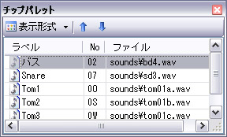

| 便利な使い方 |
|---|
| チップパレットを使う |
チップパレットとは、いくつかのチップをリストから取捨選択して、好きな位置に配置しておけるフローティングウィンドウです。頻繁に使うチップを登録しておくことで、数多いリストの中から探し出す手間を省くことが出来ます。

ツールバーの
 ボタンを押下するか、あるいはメニューバーから [表示(V)] → [チップパレット(P)] を選択すると、チップパレットの表示の
ON / OFF を切り替えることができます。
ボタンを押下するか、あるいはメニューバーから [表示(V)] → [チップパレット(P)] を選択すると、チップパレットの表示の
ON / OFF を切り替えることができます。
登録したいチップを編集タブからチップパレットまでドラッグ＆ドロップします。
① チップパレットの中のチップを選択し、右クリックしてメニューを出します。
② [パレットから削除(D)] を選択します。